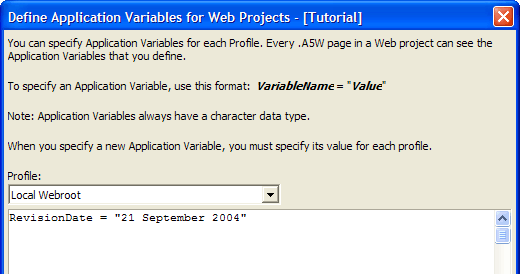

Application Variables
Application variables are similar to aliases, in that you define application variables for each profile in your project. However, unlike aliases, the Application Server does not replace references to application variables at publish time. Instead, Application Server resolves application variables when a page is executed.
Application variables are "page global" variables, which persist for the lifetime of the session. They can be "seen" by all of the code that executes in an .a5w page. Application variables are always character variables.
 Note : You can change
an application variable's value, but the new value will not
be available in the next session.
Note : You can change
an application variable's value, but the new value will not
be available in the next session.
How Application Variables Work
When you publish your application, the Application Variables are defined in the a5_application.a5i page which is automatically published. The Application Variables are visible to the Xbasic code on any page.
For example, assume that for the "Local Webroot" profile you have defined the following Application variables:
|
appvar1 = "this is the value of appvar1" appvar2 = "this is the value of appvar2" |
When your Web Application is published, Alpha Five will add the following code to the a5_application.a5i page:
|
<%a5 DIM Global appvar1 as C DIM Global appvar2 as C appvar1 = "this is the value of appvar1" appvar2 = "this is the value of appvar2" %> |
Using Application Variables in Xbasic Code
You use an Application variable in your Xbasic code in the same way that you would use any other variable. For example, if you created an .A5W page with this Xbasic:
|
<%a5 ?"The value of the appvar1 application variable is:
" + appvar1 +" %> |
then, when this page was executed, the browser would show:
"this is the value of appvar1"
In a more practical example, you might have defined an application variable called dataPath whose value is c:\Program files\a5v6\samples\alphasports. Your .A5W page might contain this code:
|
<%a5 dim t as P t = table.open(dataPath + chr(92) + "customer.dbf") t.order("customer_ID") t.fetch_find(session.customer_id) lastname = t.lastname t.close() %> |
As you see, in this example, the Application variable serves the same purpose as a path Alias, but it works in a different way.
How Alpha Five Searches for the A5_Application.A5I Page
The A5_application.A5I is loaded and cached when the first page in a new session is run. If the A5_application.A5I is not found in the directory of the page that is executed, Alpha Five then looks in this folder"s parent folder for a A5_application.A5I page. If a A5_application.A5I is not found in this folder, then it keeps looking up one level in the folder hierarchy until it reaches the top level folder of the Web root. Because the application variables defined in the A5_application.A5I page are cached, the value of Application Variables cannot be changed after the application has been published.
Creating Application Variables
You can create Application Variables when you define the properties of your profiles.
From the Web Projects Control Panel, click the Profiles button on the toolbar. This displays the Profile Editor.
Select General > Application Variables. This displays the Application Variables Editor.

See Also
Creating a New Profile, Using Variables on A5W Pages, Path and Connection String Aliases
Supported By
Alpha Five Version 6 and Above
Limitations
Web publishing applications only.